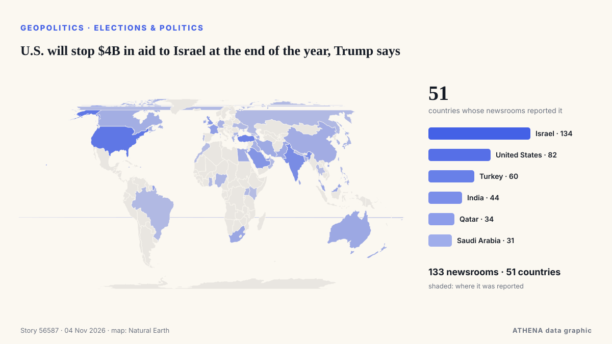

Геополитика, политика и безопасность
Заголовки приводятся на английском языке, как они были опубликованы.

Выборы и политикаU.S. will stop $4B in aid to Israel at the end of the year, Trump says
Сообщили: 133 издания в 51 стране с 24 окт. Первым — Responsible Statecraft. ATHENA оценивает риск в 5.4/10 (повышенный), уверенность 90 %.
| 22 окт. | 272 |
|---|---|
| 23 окт. | 251 |
| 24 окт. | 175 |
| 25 окт. | 179 |
| 26 окт. | 318 |
| 27 окт. | 278 |
| 28 окт. | 236 |
| 29 окт. | 244 |
| 30 окт. | 285 |
| 31 окт. | 152 |
| 1 нояб. | 205 |
| 2 нояб. | 294 |
| 3 нояб. | 246 |
| 4 нояб. | 8 |
US midterms: All eyes on crucial Michigan Senate race
The Democrats' messy Michigan Senate campaign is again marred by friendly fire, with defeated primaries candidate Haley Stevens breaking ranks and endorsing the Republican nominee in Tuesday's… из ABC News Australia
First polls close in US midterm elections
US midterm elections: Senate control could hinge on Texas. из CGTN (World)
Lula Can Fill Six Brazil Central Bank Seats
Our experts unpack what Lula’s victory means for Brazil’s ties with Washington and how it could reshape a region trending right. из Atlantic Council
Americans vote in midterms set to upend Trump presidency
Democrats are seeking to seize control of both chambers of Congress as voters voice growing frustration over rising living costs, inflation and the war with Iran. из Kyiv Post
2,800 troops to join first Ukraine support force exercise in Poland
The drill will simulate moving troops and supplies such as food and fuel, and was agreed at a Coalition of the Willing summit in July. из The Independent
First polls close in closely watched U.S. midterm elections
The US midterm elections next month could change the course of American politics at home and – and American policy abroad. из The National
Trump faces midterm verdict with control of Congress at stake
AMERICAN voters will deliver a verdict on the first two years of President Donald J. из BusinessWorld
Kremlin confirms trilateral talks on Ukraine set for Nov 10-11 in Abu Dhabi
The United States will bring together delegations from Ukraine and Russia in Abu Dhabi on November 10-11 to discuss ending Russia's conflict with Ukraine, post-conflict security agreements and… из CGTN (World)
Death toll hits 29 after Russian strike on Ukrainian aid site, with 48 still missing
Russia launched 289 attack drones, 17 ballistic missiles and 59 cruise missiles across nine regions, President Zelenskyy said in an online post that noted the barrage coincided with U.S. elections. из NPR
Iran-US deal still out of reach despite heightened diplomatic efforts
Iran and the United States are far from reaching a deal to end the war, a senior Iranian official told Reuters on Tuesday, despite heightened diplomatic efforts to prevent a potential return to… из Arab News
Russian strike on Kharkiv hospital raises injury toll to 73
In Kharkiv, 73 people were injured as a result of a Russian attack on the night of November 3. из Ukrinform (English)
Indian Navy Rescues 20 Crew Members From Hijacked Iranian Vessel off Somalia
Airborne commandos recapture fishing boat seized by pirates as attacks off the Somali coast rise to their highest level since 2013. из Kurdistan24 (English)
Putin orders private data centres to set aside 10% of capacity to support IT infrastructure
Russian data centers have become targets of Ukrainian drone attacks in recent weeks. из The Moscow Times
Neighbors are Iran's priority, Araghchi says
Iran's Qalibaf says progress only possible when Tehran's seven conditions are met Iran's parliament speaker said on Thursday that Tehran's conditions had been repeatedly and clearly communicated to… из Middle East Eye
UK PM Burnham says he is ‘open’ to formal apology for slavery, but rules out reparations
At least 12.5 million Africans were abducted and sold into slavery. из Express Tribune
Netanyahu Is Pressing Trump to Attack Iran After the Midterms, Officials Say
Democratic doctors aim to convert the backlash against the Trump administration’s health policies into midterm votes. из Al Jazeera English
Israeli strikes kill three people in Gaza, medics say
Israeli strikes killed at least three Palestinians and wounded several others in the Gaza Strip on Monday, the territory’s health officials said. из Cyprus Mail
N. Korea tests 'dispersal warhead' for cruise missiles following cluster bomb test
SEOUL, Nov. 3 (Yonhap) -- North Korea has tested a "dispersal warhead" for a str... из Yonhap (English)
Belgian PM offers resignation over budget, king defers decision
Belgian Prime Minister Bart De Wever tendered his resignation on Monday after budget talks failed, the Royal Palace said in a statement on X, adding that King Philippe had deferred a decision on… из CGTN (World)
Iran Says Contacts Over Ending War Continue After Talks Finish With No Breakthrough
Contacts between Iran and the United States to end their eight-month war are continuing, Tehran said on Monday, after days of Iranian talks with Qatari mediators ended with altered proposals but no… из gCaptain
Russia arrests minor after US Embassy warns of ‘credible threat of a mass casualty event’ in Moscow
Russia’s Federal Security Service says detainee posted TikTok videos showing object resembling weapon at Moscow museum-reserve. из Anadolu Agency (English)
UN peacekeeping mission in Western Sahara ends after 35 years
Morocco, which claims the Western Sahara as its own, welcomed the decision, while its opponents in the Algeria-backed Polisario Front expressed concern. из Free Malaysia Today
Oleshky ceasefire expires, Ukraine evacuates civilians from parts of Kherson region
Nov 1 - Ukraine's military said it evacuated 167 people from threatened areas of southern Kherson region on Sunday as a temporary local ceasefire expired — two days after buses carried residents out… из The Straits Times
China's foreign minister pushes for dialogue to resolve Middle East conflict
BEIJING, Nov 2 (Reuters) - China's Foreign Minister WangYi said on Monday that all parties in the Middle East conflict should focus on political solutions rather than resorting to arms again, in a… из Al-Monitor
US delivery of 500 Patriot missiles to Ukraine will span 3 years starting in 2030
NATO Supreme Allied Commander Europe General Alexus Grynkewich said the United States continues to supply Ukraine with Patriot interceptor missiles, as well as weapons packages paid for by European… из Ukrinform (English)
Iranians Have Left Doha Talks, Draft Proposal for US Deal Being Circulated, Official Says
Nov 2 (Reuters) - Iranian negotiators have left talks with Qatari mediators aimed at ending the war with the United States, and a draft proposal is being circulated with a follow-up meeting possible… из Al-Monitor
Presidential runoff Iotova Wins over 85% of Votes in Bulgaria's Presidential Runoff in Moldova
Bulgarians voted Sunday in a presidential runoff between two candidates with opposing views on the Ukraine war and relations with Russia as tensions mount in the Black Sea. из France 24 English
Presidential Runoff Turnout Stands at 19.33% as of 16:00
Voter turnout in Bulgaria’s presidential and vice-presidential election stood at 2.4% as of 9:00 a.m.... из Novinite
Saudi civil defence sounds all-clear after alerts in southern cities
Nov 2 - Saudi Arabia's civil defence authority on Monday said the threat had passed shortly after issuing alerts for the southern and western cities of Khamis Mushait, Abha, Taif and Najran, amid… из The Straits Times
Trump questioned about new Iran strikes: ‘Would I tell you?’
Expectations are growing that the US President will order new strikes against Iran as soon as this week. из Sydney Morning Herald
Coalition Destroys 5 Houthi Ballistic Missiles, 4 Drones Fired at Saudi Arabia
Riyadh: Saudi forces on Tuesday intercepted a ballistic missile aimed at the kingdom's capital, said a spokesman for the Riyadh-led coalition backing Yemen's government, after auth... из Oman Observer
Erdogan, Zelensky talk Black Sea Grain Corridor
Turkish President Recep Tayyip Erdogan and Ukrainian President Volodymyr Zelensky agreed on Saturday to continue work on the Black Sea Grain Corridor, aimed at enabling grain shipments from Ukraine. из AzerNews